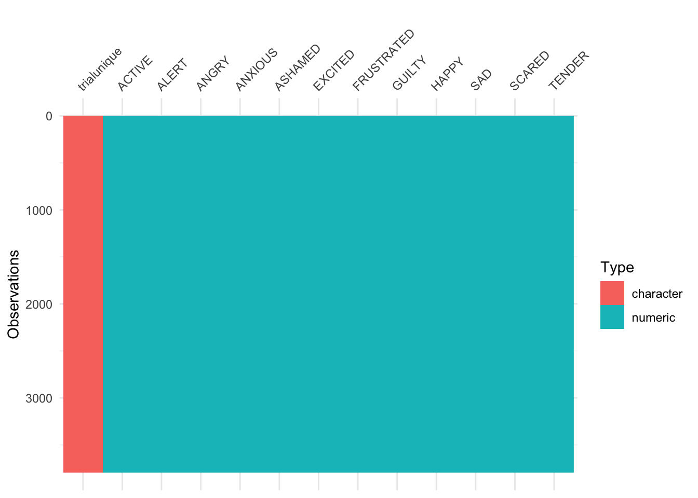
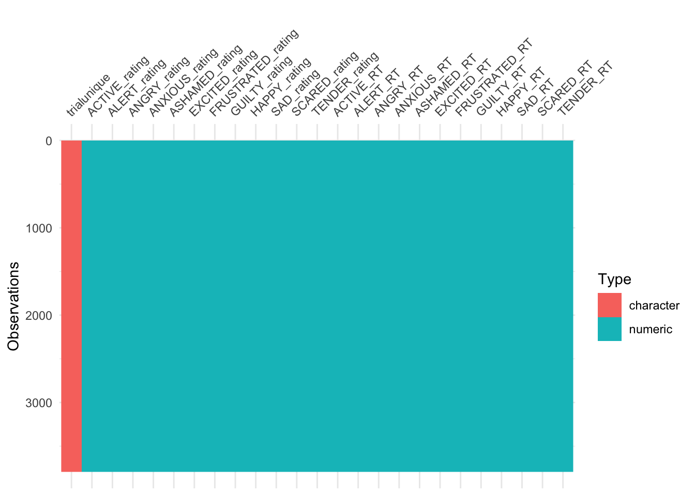

Data Cleaning
joellarwood
2019-11-11
Last updated: 2019-11-14
Checks: 7 0
Knit directory: AlexithymiaMusicAffectPsychophysiology2019/
This reproducible R Markdown analysis was created with workflowr (version 1.4.0). The Checks tab describes the reproducibility checks that were applied when the results were created. The Past versions tab lists the development history.
Great! Since the R Markdown file has been committed to the Git repository, you know the exact version of the code that produced these results.
Great job! The global environment was empty. Objects defined in the global environment can affect the analysis in your R Markdown file in unknown ways. For reproduciblity it’s best to always run the code in an empty environment.
The command set.seed(20191111) was run prior to running the code in the R Markdown file. Setting a seed ensures that any results that rely on randomness, e.g. subsampling or permutations, are reproducible.
Great job! Recording the operating system, R version, and package versions is critical for reproducibility.
Nice! There were no cached chunks for this analysis, so you can be confident that you successfully produced the results during this run.
Great job! Using relative paths to the files within your workflowr project makes it easier to run your code on other machines.
Great! You are using Git for version control. Tracking code development and connecting the code version to the results is critical for reproducibility. The version displayed above was the version of the Git repository at the time these results were generated.
Note that you need to be careful to ensure that all relevant files for the analysis have been committed to Git prior to generating the results (you can use wflow_publish or wflow_git_commit). workflowr only checks the R Markdown file, but you know if there are other scripts or data files that it depends on. Below is the status of the Git repository when the results were generated:
Ignored files:
Ignored: .DS_Store
Ignored: .Rhistory
Ignored: .Rproj.user/
Ignored: Archives/.DS_Store
Ignored: Archives/JULY Analysis ARCHIVE/.DS_Store
Ignored: Archives/JULY Analysis ARCHIVE/.RData
Ignored: Archives/JULY Analysis ARCHIVE/.Rhistory
Ignored: Archives/JULY Analysis ARCHIVE/.Rproj.user/
Ignored: Archives/JULY Analysis ARCHIVE/First19Data/.DS_Store
Ignored: Archives/JULY Analysis ARCHIVE/data/.DS_Store
Ignored: Archives/Novembe Analysis ARCHIVE/.DS_Store
Ignored: Archives/Novembe Analysis ARCHIVE/.RData
Ignored: Archives/Novembe Analysis ARCHIVE/.Rhistory
Ignored: Archives/Novembe Analysis ARCHIVE/.Rproj.user/
Ignored: Archives/Novembe Analysis ARCHIVE/code/.DS_Store
Ignored: Archives/Novembe Analysis ARCHIVE/code/.Rhistory
Ignored: Archives/Novembe Analysis ARCHIVE/data/.DS_Store
Ignored: JULY Analysis ARCHIVE/
Ignored: Psychopy/.DS_Store
Ignored: data/.DS_Store
Ignored: dataAnalysis/.DS_Store
Unstaged changes:
Modified: Analysis/_site.yml
Modified: Analysis/data_cleaning.rmd
Modified: Analysis/describe.rmd
Modified: Analysis/index.Rmd
Note that any generated files, e.g. HTML, png, CSS, etc., are not included in this status report because it is ok for generated content to have uncommitted changes.
These are the previous versions of the R Markdown and HTML files. If you’ve configured a remote Git repository (see ?wflow_git_remote), click on the hyperlinks in the table below to view them.
| File | Version | Author | Date | Message |
|---|---|---|---|---|
| html | 7112720 | joellarwood | 2019-11-14 | Build site. |
| rmd | 20bc296 | joellarwood | 2019-11-14 | workflowr deploy |
| html | 20bc296 | joellarwood | 2019-11-14 | workflowr deploy |
| rmd | 428efc7 | Joel Larwood | 2019-11-12 | file location fixed using here::here |
| html | 428efc7 | Joel Larwood | 2019-11-12 | file location fixed using here::here |
| rmd | 844afe8 | Joel Larwood | 2019-11-11 | wflow project progress |
Here the data import, processing, and cleaning steps taken can be followed and visualised
survey <- read_csv(file = here::here("data", "RawSurvey.csv"))survey <- survey %>%
mutate(gender_recoded = recode_gender(gender = gender,
fill = TRUE) %>% as_factor(),
yearsplay = as_factor(yearsplay) %>% recode("6" = "5+"),
)
levels(survey$gender_recoded)
levels(survey$yearsplay)
survey <- survey %>%
mutate(gender_recoded = fct_recode(gender_recoded,
female = "Girl/Female"))
levels(survey$gender_recoded)Create scores
Alexithymia
Some items ( tas_18r ) were negatively correlated with the total scale and
probably should be reversed.
To do this, run the function again with the 'check.keys=TRUE' optionThe internal consistency for total alerxithymia scores was 0.8248528
The internal consistency for DDF was 0.7712705
The internal consistency for DIF was 0.840192
The internal consistency for EOT was 0.56039
Depression
# S (Stress) Q1, 6, 8, 11, 12, 14, 18
# A (Anxiety) Q2, 4, 7, 9, 15, 19, 20
# D (Depression) Q3, 5, 10, 13, 16, 17, 21
#stresslist <- c("DASS_1", "DASS_6", "DASS_8", "DASS_11", "DASS_12", "DASS_14", "DASS_18")
#anxietylist <- c("DASS_2", "DASS_4", "DASS_7", "DASS_9", "DASS_15", "DASS_19", "DASS_20")
depressionlist <- c("DASS_3", "DASS_5", "DASS_10", "DASS_13", "DASS_16", "DASS_17", "DASS_21")
survey <- survey %>%
mutate(depression = select(survey, depressionlist) %>% rowSums()
)
depalpha <- psych::alpha(select(survey, depressionlist))$total$raw_alphaThe internal consistency for depression was 0.8463932
PsychoPy Data
raw <- readbulk::read_bulk(directory = here::here("data", "PsychoPyData"), fun = read_csv)Identify Practice Trails and create trial ID
raw <- raw %>%
mutate(prac = if_else(is.na(.$songmark), "practice", "trial"),
id = as.numeric(participant),
trialnum = songtrials.thisRepN + 1,
affectcat = as.factor(recode(affectcat,
"1" = "High Arousal/Positive Valence",
"2" = "High Arousal/Negative Valence",
"3" = "Low Arousal/Negative Valence",
"4" = "Low Arousal/Positve Valence")),
targetemotion = as.factor(recode(affectcat,
"High Arousal/Positive Valence" = "Happy",
"High Arousal/Negative Valence" = "Fear",
"Low Arousal/Negative Valence" = "Sad",
"Low Arousal/Positve Valence" = "Tender")),
arousal = as.factor(recode(arousal,
"1" = "Low",
"2" = "high")),
valence = as.factor(recode(valence,
"1" = "Negative",
"2" = "Positive"))) %>%
unite(col = trialunique,
id, songmark, trialnum,
remove = FALSE)Clean word data
Ratings
emotionwords <- raw %>%
filter (WordResponse.keys > 0 & prac == "trial") %>% #emotion responses from trials
select(trialunique,
Word,
WordResponse.keys) %>%
spread(key = Word, value = WordResponse.keys) # spread so each trial is only 1 column
vis_dat(emotionwords)
| Version | Author | Date |
|---|---|---|
| 428efc7 | Joel Larwood | 2019-11-12 |
Reaction times
emotionwordsRT <- raw %>%
filter (WordResponse.keys > 0 & prac == "trial") %>% #emotion responses from trials
select(trialunique,
Word,
WordResponse.rt) %>%
spread(key = Word, value = WordResponse.rt)
vis_dat(emotionwordsRT)
| Version | Author | Date |
|---|---|---|
| 428efc7 | Joel Larwood | 2019-11-12 |
Joined
emotionwords <- left_join(emotionwords,
emotionwordsRT,
by = "trialunique",
suffix = c("_rating", "_RT"))
vis_dat(emotionwords)
| Version | Author | Date |
|---|---|---|
| 428efc7 | Joel Larwood | 2019-11-12 |
Affect ratings
affectrating <- raw %>%
filter(!is.na(arousalkey.keys) & prac == "trial") %>%
select(trialunique,
id,
songmark,
affectcat,
targetemotion,
valence,
arousal,
valencekey.keys,
valencekey.rt,
arousalkey.keys,
valencekey.rt,
likekey.keys,
likekey.rt,
prac)
vis_dat(affectrating)
| Version | Author | Date |
|---|---|---|
| 428efc7 | Joel Larwood | 2019-11-12 |
Putting datasets together
joinedaffectemo <- full_join(emotionwords, affectrating,
by = "trialunique")
scores <- survey %>% select(id,
depression,
EOT,
DDF,
DIF,
TAS,
gender_recoded,
musichours,
yearsplay)
joined <- full_join(joinedaffectemo, scores,
by = "id")
vis_dat(joined)
| Version | Author | Date |
|---|---|---|
| 428efc7 | Joel Larwood | 2019-11-12 |
write_csv(joined, path = here::here("data", "PsychoPyProcessed.csv"))
write_csv(survey, path = here::here("data", "ProcessedSurvey.csv" ))Describe data
descriptives_joined <- joined %>%
filter(!is.na(id)) %>%
group_by(id) %>%
summarise(trialscompleted = n(),
DDF = mean(DDF),
EOT = mean(EOT),
DIF = mean(DIF),
TAS = mean(TAS),
DEP = mean(depression),
)
descriptives_survey <- scores %>%
filter(!is.na(id)) %>%
group_by(id) %>%
summarise(trialscompleted = n(),
DDF = mean(DDF),
EOT = mean(EOT),
DIF = mean(DIF),
TAS = mean(TAS),
DEP = mean(depression),
)
descriptives_both <- full_join(descriptives_joined, descriptives_survey, by = "id")
descriptives_both <- descriptives_both %>%
mutate(EQdep = if_else(identical(DEP.x, DEP.y),
"equal", "not"),
EQtas = if_else(identical(TAS.x, TAS.y),
"equal", "not"),
EQeot = if_else(identical(EOT.x, EOT.y),
"equal", "not"),
EQddf = if_else(identical(DDF.x, DDF.y),
"equal", "not"),
EQdif = if_else(identical(DIF.x, DIF.y),
"equal", "not"))
tableone::CreateTableOne(data = select(descriptives_both,
-contains("y"),
-contains("id"),
contains("EQ"))) %>%
tableone::kableone(caption = "Descriptives of survey results. EQ variables indicate proportion of descriptive statistics that were identical across the survey dataset and the joined dataset indicating no errors in joining/manipulation")| Overall | |
|---|---|
| n | 121 |
| trialscompleted.x (mean (SD)) | 31.36 (3.20) |
| DDF.x (mean (SD)) | 14.13 (4.26) |
| EOT.x (mean (SD)) | 18.69 (4.13) |
| DIF.x (mean (SD)) | 17.50 (5.33) |
| TAS.x (mean (SD)) | 50.31 (10.44) |
| DEP.x (mean (SD)) | 4.71 (3.97) |
| EQdep = equal (%) | 121 (100.0) |
| EQtas = equal (%) | 121 (100.0) |
| EQeot = equal (%) | 121 (100.0) |
| EQddf = equal (%) | 121 (100.0) |
| EQdif = equal (%) | 121 (100.0) |
sessionInfo()R version 3.6.1 (2019-07-05)
Platform: x86_64-apple-darwin15.6.0 (64-bit)
Running under: macOS Mojave 10.14.6
Matrix products: default
BLAS: /Library/Frameworks/R.framework/Versions/3.6/Resources/lib/libRblas.0.dylib
LAPACK: /Library/Frameworks/R.framework/Versions/3.6/Resources/lib/libRlapack.dylib
locale:
[1] en_AU.UTF-8/en_AU.UTF-8/en_AU.UTF-8/C/en_AU.UTF-8/en_AU.UTF-8
attached base packages:
[1] stats graphics grDevices utils datasets methods base
other attached packages:
[1] psych_1.8.12 visdat_0.5.3 readbulk_1.1.2
[4] skimr_1.0.7 gendercodeR_0.0.0.9000 forcats_0.4.0
[7] stringr_1.4.0 dplyr_0.8.3 purrr_0.3.3
[10] readr_1.3.1 tidyr_1.0.0 tibble_2.1.3
[13] ggplot2_3.2.1 tidyverse_1.2.1
loaded via a namespace (and not attached):
[1] Rcpp_1.0.2 lubridate_1.7.4 here_0.1
[4] lattice_0.20-38 zoo_1.8-6 class_7.3-15
[7] assertthat_0.2.1 zeallot_0.1.0 rprojroot_1.3-2
[10] digest_0.6.22 R6_2.4.0 cellranger_1.1.0
[13] plyr_1.8.4 backports_1.1.5 labelled_2.2.1
[16] e1071_1.7-2 survey_3.36 evaluate_0.14
[19] highr_0.8 httr_1.4.1 pillar_1.4.2
[22] rlang_0.4.1 lazyeval_0.2.2 readxl_1.3.1
[25] rstudioapi_0.10 whisker_0.4 Matrix_1.2-17
[28] rmarkdown_1.16 splines_3.6.1 labeling_0.3
[31] foreign_0.8-71 munsell_0.5.0 broom_0.5.2
[34] compiler_3.6.1 modelr_0.1.4 xfun_0.10
[37] pkgconfig_2.0.3 mnormt_1.5-5 mitools_2.4
[40] htmltools_0.4.0 tidyselect_0.2.5 tableone_0.10.0
[43] workflowr_1.4.0 crayon_1.3.4 withr_2.1.2
[46] grid_3.6.1 DBI_1.0.0 nlme_3.1-140
[49] jsonlite_1.6 gtable_0.3.0 lifecycle_0.1.0
[52] git2r_0.26.1 magrittr_1.5 scales_1.0.0
[55] cli_1.1.0 stringi_1.4.3 fs_1.3.1
[58] xml2_1.2.2 ellipsis_0.3.0 generics_0.0.2
[61] vctrs_0.2.0 tools_3.6.1 glue_1.3.1
[64] hms_0.5.0 survival_2.44-1.1 parallel_3.6.1
[67] yaml_2.2.0 colorspace_1.4-1 rvest_0.3.4
[70] knitr_1.25 haven_2.1.1